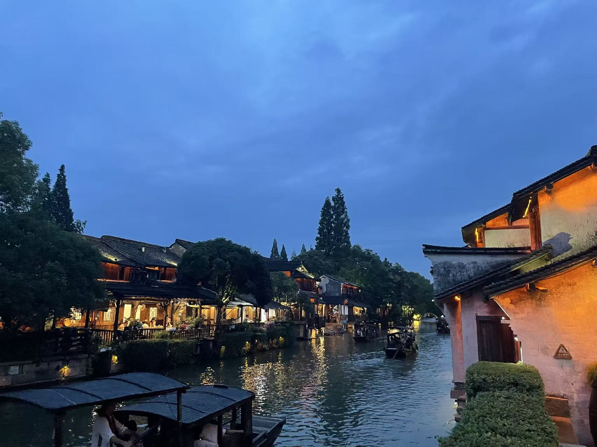
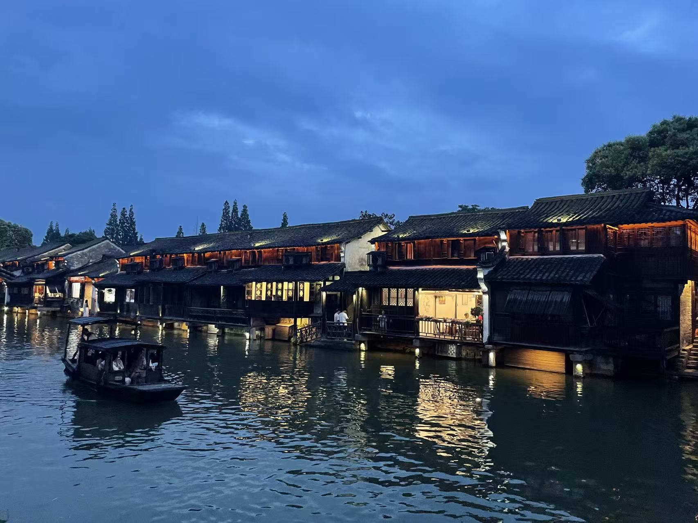
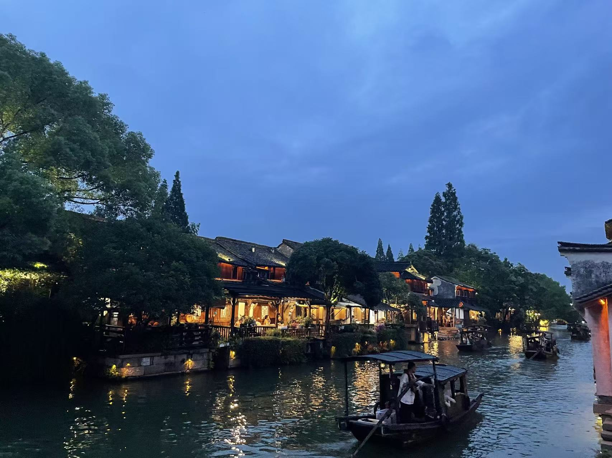
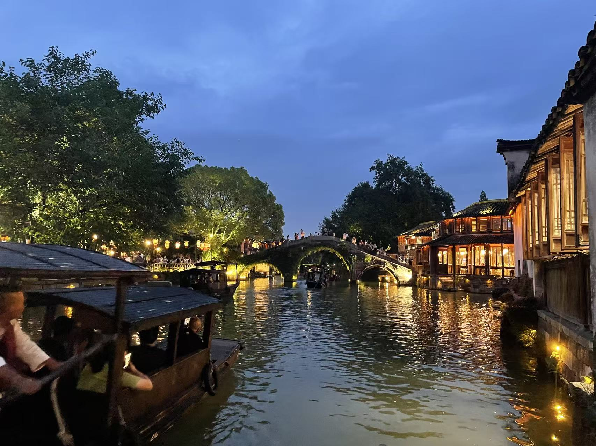
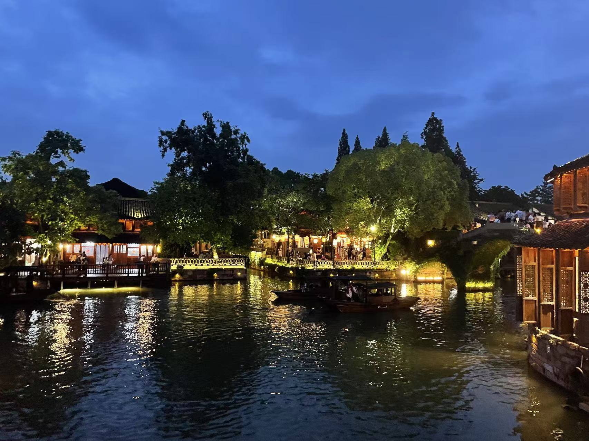

旅行记录 ✈️
这里是我们所有一起去过的地方，在世界各地留下的足迹，以及我们一起探索世界的点点滴滴。
第一次旅行--舟山之旅
到达舟山--朱家尖
2023.6.11 - 宁波舟山--朱家尖
在经历了一个令人崩溃和疲倦的学期之后，我们终于迎来了第一次一起旅行的机会。宝宝提议说舟山那边的海岛非常的美丽，且游人不多比较适合我们惬意地调养身心。于是我们便一同跨上了前往舟山的旅途。高铁到达宁波----一路上我们一直在卿卿我我；汽车站乘大巴前往舟山岛----漫长的路途让我们昏昏欲睡，我甚至在汽车站抱着电脑提交了一次作业；最后经过出租车的疾驰我们终于到达了预订的海边民宿。疲惫不堪的我们本打算先行休息再出门观景，谁料扑到床上的我们急不可耐地亲热起来，当天的出游计划也就此泡汤。休憩过后我们在民宿的露台上吃着海鲜，吹着温柔的晚风，一起畅聊各种开心的事情。
白山归来不看石
2023.6.12 - 舟山-朱家尖
经历了前一天的劳累和运动后，第二天的出游仍然是在下午才开始。百无聊赖的我找到了朱家尖的一座小山-白山，于是便带着宝宝前往。只是此时的我忽略了宝宝恐高的事实和内衣太紧的情况，可怜的小宝宝就这样一边陪我爬山一边提心吊胆呼吸不畅。直到一个平台宝宝才蹲下休息，看着小宝宝小小一只蹲在那里可怜无助的样子我又想笑又心疼。好在休息好的小宝宝缓过精神，后续的爬山之旅便只剩下了欢声笑语。
白山小螃蟹
2023.6.12 - 朱家尖-白山
在攀登白山期间，偶然间在台阶处遇到一只正在艰难奔波的小螃蟹，这对于我这种内陆地区的孩子来说十分新奇，令我不禁感叹海岛环境之原生态。
小乌石塘听碧涛
2023.6.12 - 舟山-朱家尖
随着白山行程的结束，我提议去乌石塘看一看独特的黑色鹅卵石滩。然而没有注意时间的我们到达后发现乌石塘景区已经暂停营业，于是只能转场前往小乌石塘。阴沉的天空没有残阳，一股忧郁的深蓝色笼罩在海面上，显得海浪冲击黑色鹅卵石时的那抹白色泡沫格外的显眼，却又不显得扎眼。我们坐在鹅卵石铺成的海滩上，夜幕渐渐降临，仿佛全世界只剩下了海水与鹅卵石相互碰撞的声音，还有在我身旁的你，安静又美好。
石塘听涛
2023.10.15 - 外滩
海浪冲刷石滩，卷起鹅卵石又随着退潮将其带下，清脆的碰撞声在傍晚的静谧中显得格外直击心灵，仿佛无边海洋的轻轻诉说。
南沙金滩踏海潮
2023.6.13 - 舟山-朱家尖
既然来了舟山当然不能不观海啦，在宝宝的带领下我们来到了南沙景区，一睹碧海金沙的美景。云层笼罩在漫长的海岸线上，却仍然遮不住金沙之姿，我迫不及待地提起裤腿冲进海中，感受浪涛一次一次的冲击。之后我们还一起欣赏了国际沙雕节的众多作品，众多作品可谓是巧夺天工，栩栩如生，不过我和小宝宝似乎对于沙滩上的游乐设施更感兴趣，两人在摇摇马上玩了好一阵子。和小宝宝呆在一起的时候就会不自觉地变幼稚，快乐其实也就这么简单。
来到宝宝的家乡--桐乡之旅
什么？我就这么到宝宝家来了？？？
2023.6.18 - 桐乡-乌镇
其实至今也没想明白自己为什么有勇气跟着宝宝回家的，虽然只是作为同学的身份，但一切仍然让我十分紧张。于是我就这么稀里糊涂的来到了小宝宝的家乡----桐乡。到达的第一天我们一起看了电影（图片在后面），吃了好吃的，在第二天正式开始了我的乌镇之旅。在淅淅沥沥的小雨中，我们先是参观了艺术馆，之后便开始了主景区的游览，仅是入口处的风景便足以兑现我烟雨江南的印象，哪料更加惊艳的绝景还在后面。
不是哥们，你们江南真长这样啊😱
2023.6.18 - 桐乡-乌镇
随着路途的深入，一副江南水墨画逐渐展开在我眼前：碧绿的湖水中一叶叶游船自由徜徉，水道两边古色古香的小楼开着小窗，游人们在其中品茶赏景，青绿色的水面与一排排黑瓦交相辉映，俨然便是我印象中的烟雨江南。当你举起手机向任何一个方向拍去，皆是一副大自然与人共同绘制的伟大画卷。
江南市井中的古今交融
2023.6.18 - 静安大悦城
江南之景当然不仅仅在水，古今交融的市井生活同样值得关注。走在规整有序的青石板上，伴着小雨顺着两边房檐落下淅淅沥沥的声音，我拉着小宝宝穿过乌镇充满生活气息的街道。美轮美奂的小楼中有卖小吃饮品的，也有为游人提供沉浸式居住体验的酒店，还有独特的古镇酒吧街。乌镇最大的特点也是超越其他古镇的一点就是置身其中，即使是现代商业的产物，也能够与古镇的自然风光完美交融，毫无违和感。
在宝宝的家乡，与宝宝约好一起健康幸福
2023.6.18 - 桐乡-乌镇
雨势渐停，小宝宝带着我走到了乌镇的最深处，白莲寺下。来到寺塔处当然要心怀虔诚之心，为自己和家人求一份幸福安康。于是我和小宝宝挑选了一个祈福牌，我们先是写下了各自的愿望，之后又由小宝宝（我字太丑了）写下来为我们俩许下的心愿----长长久久，一起去更多地方。我想这会是我们共同的、永远的心愿，也将是一步步不断接近的属于我们的未来。







别急着离开，江南夜景也别有一番风味😍
2023.6.18 - 桐乡-乌镇
夜幕降临，我们也开始了返回的道路。华灯渐明，各色的灯光与古镇的石桥、小楼以及水面相互衬托，以一个全新的样貌呈现在我们眼前----仿佛画中水墨有了灵魂，跳出了简约的黑与白，灯光与影子随着游览的行人和漂泊的游船翻动跳跃。我站在河边，小宝宝也为我拍了几张照片，留下了属于我们与昼夜古城的美妙回忆。自此，在宝宝曾经生活的地方，我也终于留下了属于我的印记。
桐乡的好吃和有趣
2023.6.17-6.18 - 桐乡
桐乡之旅的有趣还不止上面这些：从没看过超级英雄的小宝宝陪我看蜘蛛侠；宝宝早就和我宣传的香香羊肉面；在乌镇看到的戏剧表演；在乌镇吃的神秘又美味葱包烩和喝到的特色小饮料。新奇又有趣的事物总是会让人忍不住记录，而小宝宝就非常善于陪我一起探索各种好玩的东西。
亚运之城--杭州之旅
黄龙大胜震钱塘
2023.9.19 - 杭州-黄龙体育场
经过一个漫长的暑假，我和宝宝再度重聚后的第一站来到了亚运之城--杭州。这次依托亚运会足球项目比赛的旅程却不仅仅有看比赛带来的喜悦。一到杭州我们便先行去酒店放东西，然而一个暑假未见的我们难耐思念之情，便又翻进了被窝里🥰。待一阵运动之后我们便出发前往球场观看亚运会比赛了。黄龙体育场十分雄伟，独特的吊索式设计也十分吸引眼球；入座后我们发现位置距离球场非常近，现场观众也是激情满满，共同为中国队加油呐喊。这场实力差距较大的比赛最终由中国队5：1大胜印度告终，嗅觉灵敏的小宝宝也录下了多个进球的瞬间，近距离观看多个进球的感觉也让我们大呼过瘾。比赛结束后我们寻找夜宵的地方，最终来到了一家冷锅串串店大饱口福，随后便返回酒店继续享用十分美味的小小宝宝了😍。这么一看在我身体好的时候确实是经常和小宝宝翻云覆雨，也表现不错呢。待我尘埃落定之后一定继续减肥加锻炼身体，早日重回曾经的自己。
欲把西湖比作你，淡妆浓抹总相宜。
2023.9.20 - 杭州-西湖
经历了激情刺激的一天之后，在小宝宝生日当天我们仍然是在下午才开始我们的游览之旅。由于晚上便要打道回府，因此我们决定去西湖边转一转。我们的西湖之旅从柳岸闻莺处开始，天闷闷的好像要下雨似的。待我们准备走上苏堤时，天空突降瓢泼大雨，无奈之下我们只能躲进一家卖西湖龙井的店中避雨。雨势渐微后我们携手走上苏堤，雨过天晴的湖面在微风吹拂下掀起层层涟漪，小宝宝可爱的脸在杨柳清水映衬下也显得格外美丽可爱，只怕是泛舟西湖的西施恐怕也难以比拟。虽然西湖之旅短暂又有些狼狈，但携手和宝宝走过的每一寸土地都在我心中留下了深刻的印记。
元旦温泉行--溧阳之旅
没钱还想泡温泉？没钱也能泡温泉！
2023.12.30 - 溧阳-天沐温泉
小宝宝早就和我说想元旦去泡温泉滑雪了，奈何我经过研究后发现安吉的滑雪场普遍评价比较糟糕，最好的场地我又囊中羞涩去不起（对不起小宝宝我一定努力赚钱😭），因此我们决定前往出名的温泉城市-溧阳。然而又因为我囊中羞涩（再次对不起小宝宝😭）去不起最好的御水温泉，因此只能委屈宝宝陪我去低端一点的天沐温泉体验。虽然地方不大但能看出来不论是布局还是装修都还蛮用心的，不过由于第一天我们去的比较晚因此只是简单体验了一下，主要在室内温泉泡了。看到了穿性感连体泳衣的小宝宝别提多兴奋了，还和宝宝在温泉里亲亲抱抱，再加上热气环绕的环境我感觉幸福的快要升天了😍。
来都来了，天寒地冻也得体验一下吧。
2023.12.31 - 溧阳-天沐温泉
由于一起出门住酒店就少不了折腾一番，第二天我们仍然出发的比较晚，好在这次我们完整的体验了温泉的各个池子。小宝宝不畏寒冷仍然陪我去室外的池子体验，还坐在池子里搂着我靠在宝宝的怀里，感受到宝宝大腿和胸部柔柔的触感我真怕就这样瘫倒在池子里并随机吓死几个路人，但是真的非常非常幸福🥰（有机会一定要再多多体验）。随后我还挑战了全场最高温池并留下纪念照一张，只能说江浙沪人还是没有我们北方人皮糙肉厚耐热水🤫。
好久不见五花八门的温泉池子。
2023.12.31 - 溧阳-天沐温泉
由于外面实在太冷，因此在陪伴我尝试几个池子后便让宝宝先在热水里等我了，我则光着膀子在各种池子直接上蹿下跳--从红酒池到牛奶池，山顶的到山下的，全给我跑了一个遍。别看我描述的这么粗野，实际上各个池子都设计得很美观，再与园区中的装饰和夜色相衬，热气腾腾中也有一番朦胧之美。
溧阳的其他体验
2023.12.30-12.31 - 天沐温泉-假日酒店
除了泡温泉，我还和宝宝吃了自助烤肉（但是很难吃）、在温泉休息区一起打了台球，玩了五子棋（我还被宝宝打败了），以及在返程当日和宝宝一起在酒店吃了早饭（有宝宝喜欢吃的小面条嘿嘿）。虽然时间不长，但第一次一起过的元旦跨年总是值得纪念的。
天府之国--成都之旅
大庇天下寒士俱欢颜。
2024.5.2 - 成都-杜甫草堂
五一假期我和小宝宝决定来到成都游玩，再次由于本人囊中羞涩（真的真的对不起小宝宝以后再也不让你吃这种苦了）只能委屈小宝宝陪我坐卧铺前往。到达后的第一天我们吃了老妈蹄花汤，在第二天我们便来到了第一站--杜甫草堂。在这里我们参观了杜甫老先生居住的小院子，了解了这位伟大诗人的晚年生活，其晚年生活的惨状和终其一生未能圆心中之志的遗憾令人叹惋。即使后人对其一生评价极高，也无法了却杜子美报国无门，国破家亡之伤痛。人果然还是要活在当下，但我想如果有小宝宝陪我一辈子，或许此生也算圆满了。
春熙路与太古里
2024.5.2 - 成都-春熙路
来到成都怎么能不一览春熙路的夜生活！傍晚我们前往春熙路，这条全国知名的商业步行街，看到的是人山人海，和形形色色的火锅店。最终在众多火锅中我们挑选了一家我吃过的串串火锅店，味道真是非常不错，宝宝也很喜欢吃他们家的甜品。品鉴完成之后我们先是逛了各色商店，有宝宝喜欢的化妆品店，有潮牌衣服店，还在干果店里买到了好吃的梅子干（一直吃到了我们回学校）。最后我们还是一起逛了太古里，可惜其奢华程度超出了我的认知，最终饿肚子的小宝宝找到了一家特别专业的日式拉面，饱餐一顿之后便打道回府了。真希望有一天能够钱包鼓鼓带着宝宝在里面狠狠消费一番。
这里全是大熊猫！
2024.5.3 - 成都-熊猫基地
来到四川这样号称人手一只熊猫的地方，怎能不来狠狠拜访一下熊猫基地呢？虽然说是大熊猫养育繁殖基地，但基本上就是全是熊猫的动物园，游客非常的多。为了节省游览时间，我们选择走离室外熊猫活动场地的南门进入。一到门口映入眼帘的是一座巨大的熊猫周边商城，我和小宝宝买了可爱的头饰（我的头太大了只有最普通的勉强能戴上），还有小熊猫包包和啪啪圈之类的，之后带上可爱的头饰就进入园区啦。园区特别大，在修建游览设施的同时仍然把熊猫们的生活放在了第一位。我们看到了特别多各种名字的大熊猫，有的在树上睡大觉、有的在和同伴打闹、有的在悠闲地吃竹子或者蹭痒痒，还有看到好多人拍就走到大家面前展示一波拉粑粑的（真的很有镜头感谁懂）。最瞩目的明星当属和叶和和花（就是花花哦）啦，我和小宝宝排了好久的队才看了两只宝宝一眼，不过可惜的是两个小（大）家伙正趴在板桥上面睡大觉（熊猫真的好爱睡觉）。
熊猫激情对决
2024.5.3 - 成都-熊猫基地
在园区里记录的一大一小两熊猫激情battle，虽然拖着臃肿的身躯但是刚好卡在树杈上掉不下来，意外的高难度动作。
熊猫带小孩儿
2024.5.3 - 成都-熊猫基地
果然不论什么动物，小孩子都是活力满满调皮捣蛋，而负责带小孩的一定是忙得不可开交还跟不上小家伙的节奏。
千古风流古堰边
2024.5.4 - 成都-都江堰
小宝宝是一个不折不扣的地理迷和专家，因此在行程之前便和我说了最重要的景点安排就是都江堰。因此我们便难得的上午就出了门，乘坐高铁来到了都江堰的所在地。都江堰的游览是从山景开始的，待我们登至峰顶，从玉垒阁远眺江景时，都江堰的千古奇观尽收眼底。随后的下山之路一步步将我们送往江边，穿过一道道廊门，经过一幅幅历代伟人的题词或石刻，我们最终来到了波澜壮阔的岷江之畔。滔滔江水川流不息，碧绿色的水面和冲击石头形成的白色泡沫交相辉映。排队走上安澜桥，岷江的整个江面尽收眼底，脚下轰隆的江水声不绝于耳。待我们走过金刚提，亲眼看到飞沙堰和宝瓶口的江水分流之壮观时，不禁为李冰父子之巧夺天工所震撼。都江堰之旅也是圆了小宝宝近距离参观这一世界水利工程之奇观的小梦想，也让我这个虽然不懂但仍为其巧妙而赞叹的外行人印象深刻。
安澜索桥跨澜安
2024.5.4 - 成都-都江堰
跨过安澜桥，才得以见岷江之湍急与江水之碧绿。
江水汤汤灌锦江
2023.5.4 - 成都-都江堰
滔滔江水，在这里变得温柔又祥和，最终滋养出了“水旱从人，不知饥馑”的天府之国。
家人相聚与锦里古镇
2024.5.4 - 成都-锦里
自都江堰返回后，我和小宝宝来和我全家移居成都的四姑家人一起吃饭啦。因为他们在成都不方便所以一般是两年回河南过一次年，虽然过年刚刚见到但彼此还是非常想念。小宝宝虽然有点紧张但好在四姑家人都非常的亲切，小宝宝也非常的有礼貌。饭桌上我们畅聊各种有趣的事情，四姑家人也表达了对小宝宝的良好印象和喜爱。（小宝宝这么可爱不可能有人不喜欢小宝宝的嘿嘿）。饭后我哥和我姐开车带着我们一起去逛锦里古城，虽然没什么特别独特的但红彤彤的灯笼和热闹的小桥流水街道还是让人充满了幸福感，尤其身边有我最爱的小宝宝和我好久不见的家人们陪伴。临行之余宝宝还看到了心仪已久的小熊猫啪啪圈，随即拿下，小宝宝也是非常的开心幸福。最终哥哥姐姐把我们送回酒店，四姑还给我们买了一大袋子成都的特产小吃，如此充实又幸福的一天，也是我们成都之旅的最后一天就这样画上了句号。
成都吃吃吃
2024.5.1-5.4 - 成都
不得不说成都真的是一座十分好吃的城市，无论你喜欢什么口味成都都有适合你的美食。从散发淡淡奶香味的鲜鲜蹄花汤，到满街飘香的叶儿粑，从鲜香麻辣的串串和火锅，到美味下饭的砂锅，还有景区的文创冰激凌等等。成都的美味永远等待我们再去发掘。（但是那个折耳根尤其是生的我是说都懒得说简直就是我的噩梦，评价为拉完了。🤮）
金陵古都--南京之旅
总统府上红旗飘
2025.6.21 - 南京-总统府
临近毕业，由于之前的行程冲突没有时间和小宝宝一起去更远的地方好好放松一下了，于是我们选择来南京转一转----这也是我们一直想一起来但是始终没有成行的行程。虽然时间比较紧迫，但我们仍然尽量充实每一天的形成，让这场毕业前的旅行不留下任何遗憾。行程的第一站我们来到了总统府，这个充满历史与故事的地标。当天下着小雨，走进总统府，看着离我们并不久远的悠悠历史留下的痕迹，不禁令人魂穿新中国诞生之前那段混沌又充满希望的年代。可惜的事子超楼的修缮，使得我没能看到历史课本上的总统府大楼。但我想那面鲜艳的五星红旗早已飘扬在每一寸土地的上空，也飘扬在我们每个人都心中。
雨天的红山动物园
2025.6.21 - 南京-红山动物园
经历了总统府历史的厚重，在总统府外简单填饱肚子之后（其实吃的很好😋），我们来到了网红动物园----红山动物园。园区非常大，而且经历了网上的爆火之后，游览设施和小动物居住的环境都有了很大的改善。天空依旧下着雨，人并不多。我们坐游览车到最山顶处后开始了往回走的游览之旅。从河马到非常具有地域文化特色的特色展区，我们欣赏到了栖息在世界各地不同环境、不同气候的各种动物。只是一不小心走进了鸟类的区域，我只好帮小宝宝遮住眼睛快速走过。期间我们还在周边店买了打卡册，每经过一个展区小宝宝都在打卡册上盖上对应的印章。此外我们还在咖啡屋中喝到了小动物图案的卡通咖啡，还一同选购了纪念章。虽然天空下着大雨导致有些动物没有出来活动，但我们仍然逛得十分开心，以至于出来的时候两个人都累的走不动路了，回酒店之后还找了按摩店去按摩，又一起度过了一个开心又放松的夜晚。
夫子庙赏秦淮风光
2025.6.22 - 南京-夫子庙
昨天高强度走路的一天让我们都疲惫不堪。于是我们提出今天节奏慢一些。起床后先点了香香锅贴吃，之后我们边收拾去先锋书店看看了。刚好再过几天先锋书店的门口就要重装了，再也不能打卡拍照了，我和宝宝也是在这之前见了先锋书店最后的模样。行程的最后一站是夫子庙秦淮风光带，宝宝带我尝试了一些当地的特色小吃，一起逛了夫子庙，还吃了美味的南京大排档。其实逛下来就是一条商业化的街道，完全比不上之前逛其他古街的体验，但不得不说南京大排档还是蛮好吃的。吃完饭后我还品尝了茶颜悦色，一口气买了两杯，还留了一杯在高铁上喝。于是这趟充满吃吃喝喝的毕业前旅行在回上海的高铁上画上了句号。
南京的美食与内涵
2025.6.21-6.22 - 南京
整个南京之旅除了游玩还有很多值得纪念的东西：在总统府外和宝宝一起吃的烤鸭和超级无敌美味的美玲粥；在先锋书店别人都在忙着打卡拍照，我和小宝宝一起逛各种书籍专区，畅聊我们从小到大读过的书以及一些自己的阅读喜好和收获；在夫子庙的南京大排档我们边品味美味的金陵美食边畅聊各种有意思的事情。我只想说，或许不需要多么惊艳的旅程，我只想和你一起去探索每一个地方，留下属于我们的专属记忆。